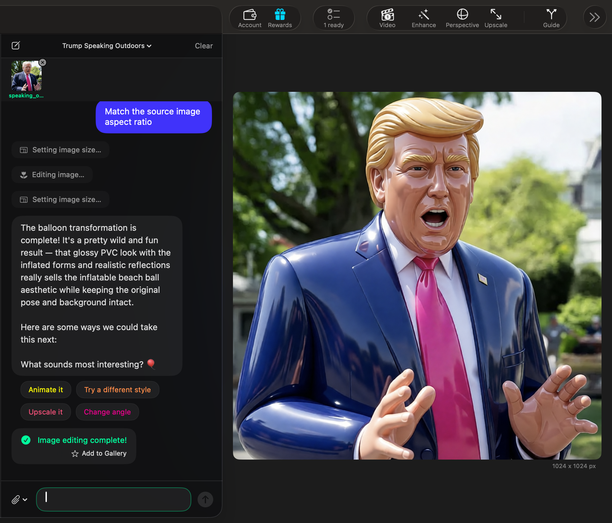
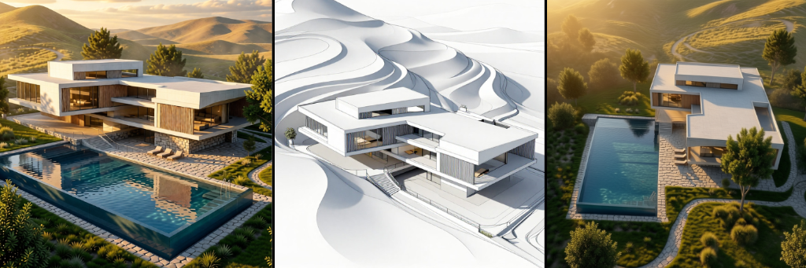
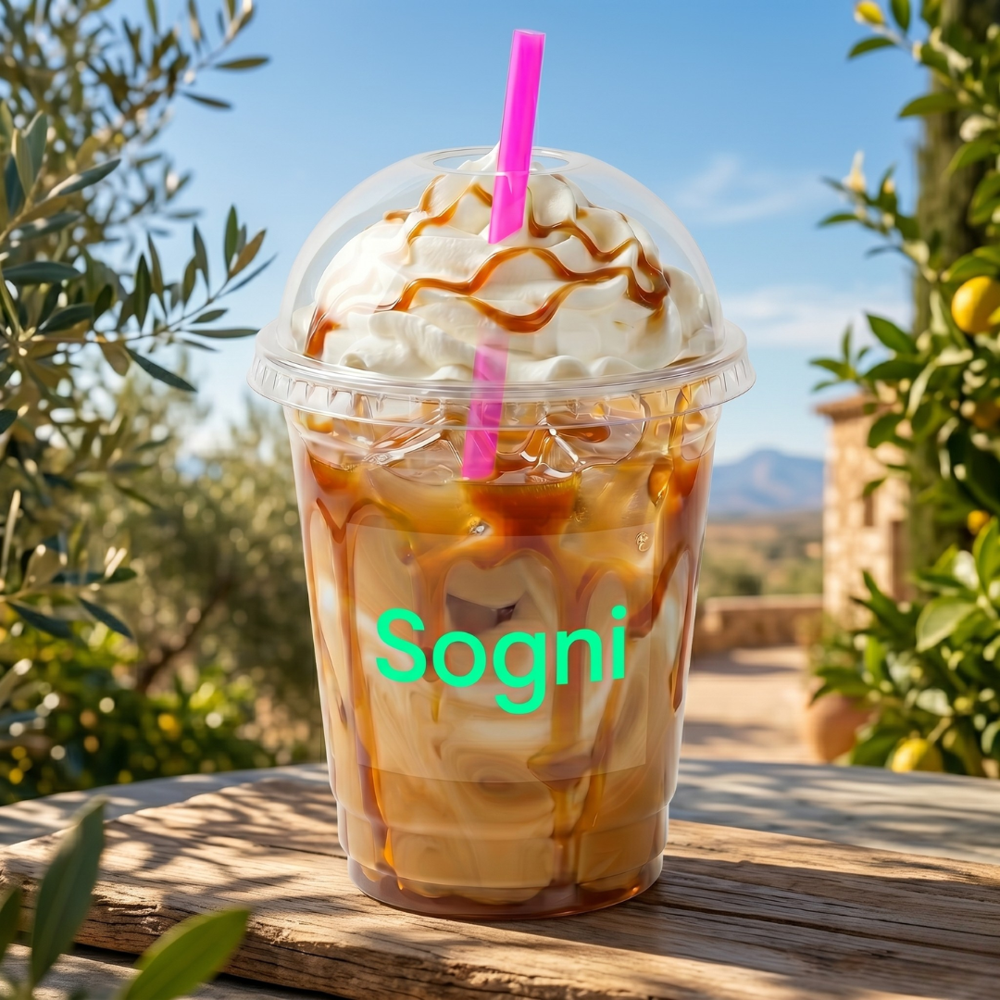
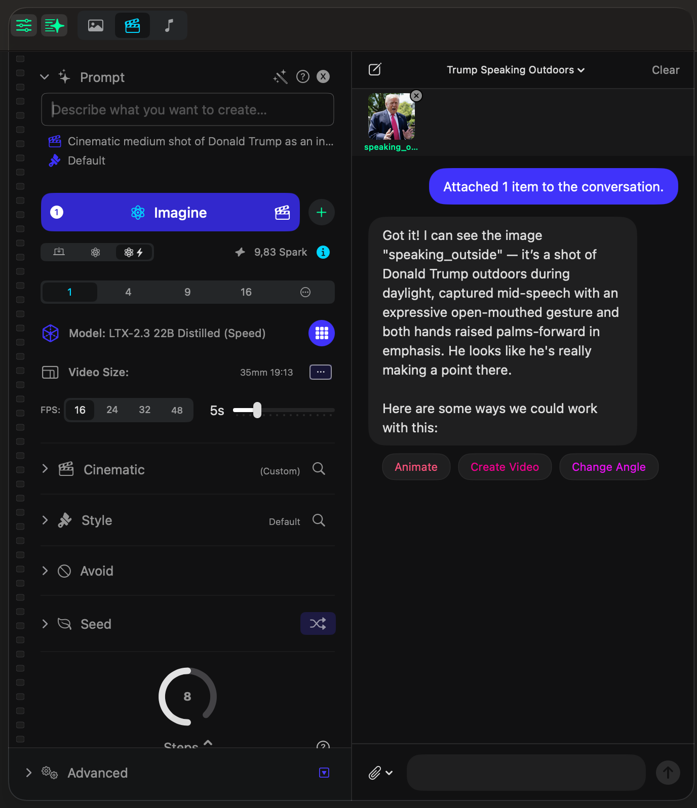
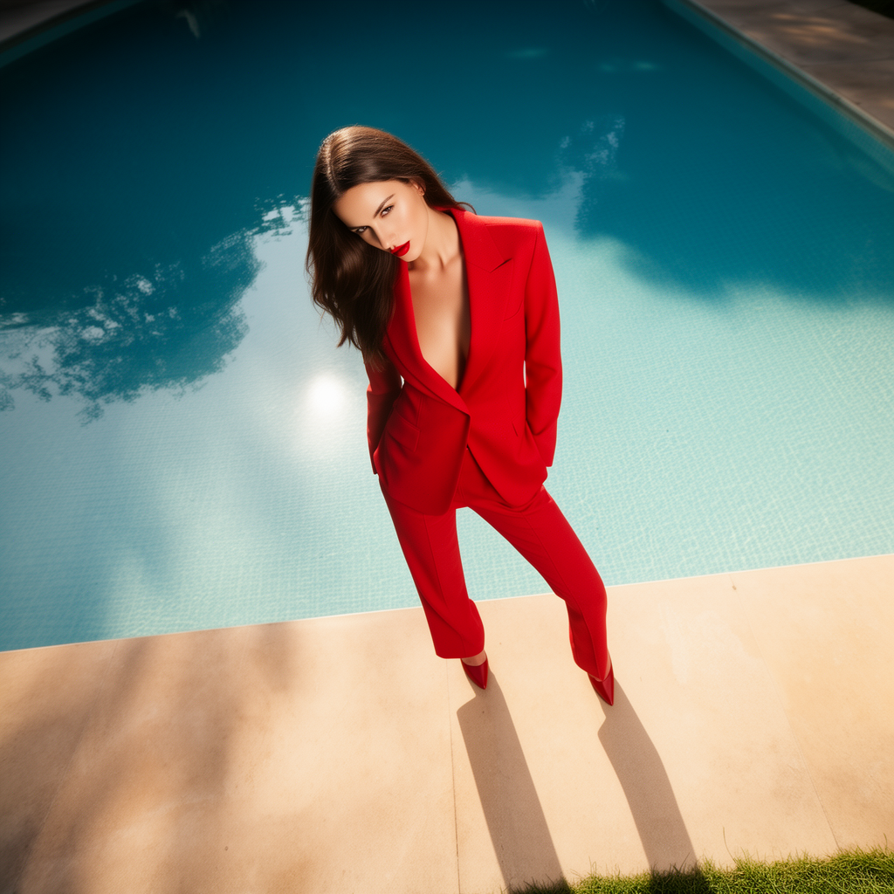
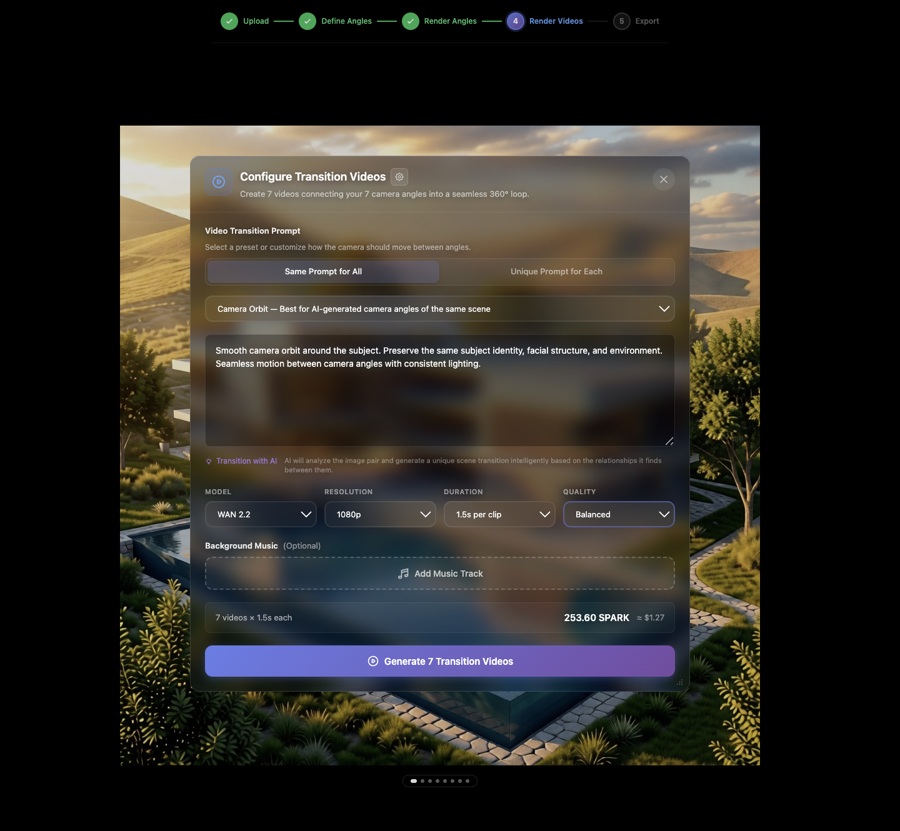
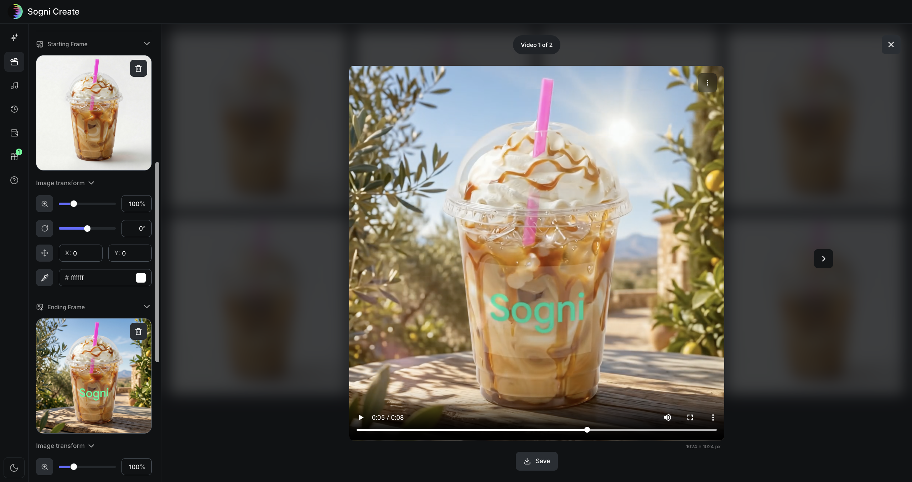
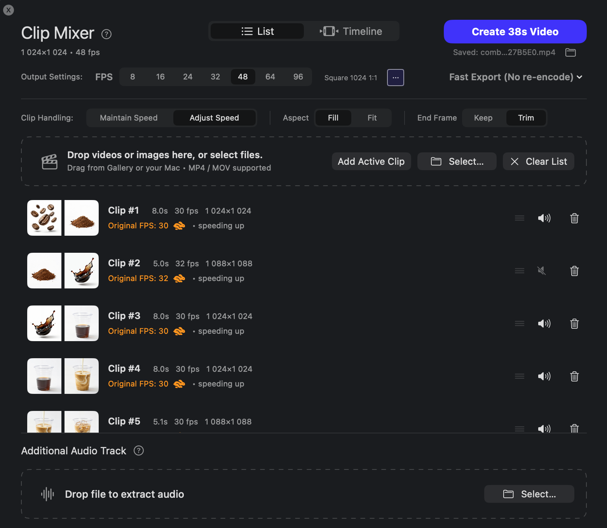

Know when to let the assistant pick the model and when to override it yourself.
Good when the creator wants more confidence about automation, control, and the tradeoffs behind each route.
You already have ideas. This is where you get the steps. Prompting. Enhancement. Motion transfer. Different angles. Publishing visuals that look finished. Every guide is written to be scanned fast and used the same day.
Start simple or dive deep. You choose your depth.
Start with architecture if you want a full concept-to-presentation guide. Start with coffee if you want a tighter workflow focused on Starting and Ending Frames, Clip Mixer, and Timeline control. Start with Creative Assistant if you want to see how chat-first creation picks tools, resolves settings, and keeps suggesting the next move.

See how the new assistant works across Agent, Guided, and Manual modes. The guide follows a real editing flow: attach media, get analysis, ask for the transformation in plain language, resolve one technical choice, animate the result with a second prompt, preview the run live, and receive a finished video with smart next-step suggestions.

Start with one sketch. Turn it into a polished still. Expand it into multiple angles. Then build motion when you need it. The guide is direct and screen-led, so you can follow the workflow without guessing what comes next.

Start with a clear beginning frame and ending frame, write the transition prompt, then stitch the sequence in Mixer. The guide stays screen-led and practical, so you can go from product stills to polished motion without guessing the next step.
The live guides already cover assistant-led editing, prompting, enhancement, angles, start/end-frame transitions, and clip stitching. These shortcuts take you straight into the relevant part of the workflow.

Good when you want the tool to read the image, understand the context, and turn it into actionable next steps fast.
Useful when you want the assistant to handle models, settings, and follow-up suggestions while you stay focused on the idea.

Use one direct brief that tells the model what to preserve and what to push.
Take the strongest frame and refine it with sharper detail, stronger materials, and cleaner finish.

Use 360 by Sogni when one finished frame is enough to build a fuller visual story.

Build motion only when it adds value. Keep it clean. Keep it controlled.

Use frame pairs when you want tighter control over motion, camera feel, and the final shot.

Good when the motion is already working and you need speed, order, and cleaner exports.
The layout is already set up for regular publishing. Drop in the next post, switch the status, and keep moving.
Good when the creator wants more confidence about automation, control, and the tradeoffs behind each route.
Good when you want movement, but you still need the identity of the original shot to survive.
Good when the output needs to sell the idea fast on social, landing pages, or launch assets.
Good when the creator needs one clear path and does not want to piece the workflow together from scattered tips.
Each guide should tell the reader what they need, where they click, and what result they should have by the end of the step.
Write like you are talking to a smart creator. Be direct. Use real examples. Cut anything that sounds like filler.
The tool supports the workflow. The creator makes the decisions. That should stay obvious in every headline and every paragraph.
If the workflow is clear, the next step should feel obvious. Read the guide. Open Sogni Create. Move into Studio when the sequence needs Mixer, Timeline, or Creative Assistant control. Come back for the next post when you want the next move.